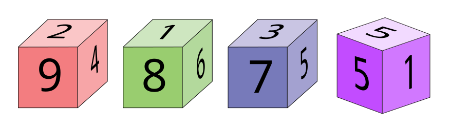
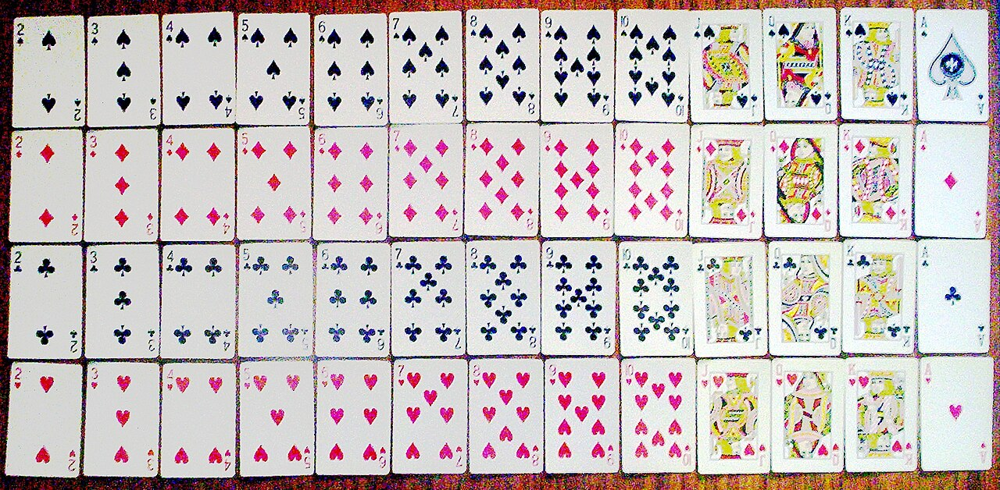

P(E)
= casi favorevoli / casi totali
1. Spazio campionario Ω
Un evento è un sottoinsieme di tutti gli esiti possibili
Lo spazio campionario contiene tutti i risultati che possono uscire da un esperimento aleatorio. Un evento è una parte di quello spazio: se lanci un dado, l'evento "numero pari" è l'insieme {2, 4, 6}.
Ωinsieme universo degli esiti
∅evento impossibile
A ⊆ Ωevento come sottoinsieme
eevento elementare: risultato singolo e indivisibile
Lancio del dado
Risultato: 1
Evento A = "pari": non verificato
Ω = {1, 2, 3, 4, 5, 6} | A = {2, 4, 6}
Se lasciamo cadere un oggetto in una stanza, possiamo prevedere con certezza che raggiungerà il pavimento.
Nel lancio di un dado non sappiamo in anticipo quale esito uscirà: il risultato non è prevedibile con certezza assoluta.
Un evento complesso si costruisce unendo più eventi elementari dello spazio campionario.
Due monete
T
C
Perché gli esiti sono quattro?
Ogni moneta ha due possibilità. Con due monete, le combinazioni sono 2 x 2: TT, TC, CT, CC. L'evento "esattamente una Testa" contiene TC e CT.
P(esattamente una T) = 2 / 4 = 1 / 2 = 50%
2. Definizione classica
Probabilità = casi favorevoli diviso casi totali
La definizione classica funziona quando gli esiti sono equiprobabili. Il risultato deve sempre stare tra 0 e 1: 0 è impossibile, 1 è certo.
P(E) = # favorevoli / # totali
Calcolatore rapido
equiprobabilitàEvento contrario: smartphone funzionante
100 smartphone, 3 con schermo difettoso e 2 con batteria difettosa.
P(funzionante) = 1 - 5/100 = 0,95 = 95%
Difetti nella scatola
95% okAltre definizioni
Statistica e soggettiva servono quando non basta contare
Quando gli eventi non sono equiprobabili, per esempio con un dado truccato o un fenomeno meteorologico, non si può usare direttamente la definizione classica.
Fr(E) = k / n | P(E) = limn→∞ k / n
Definizione statistica
frequentistaIn un numero molto grande di prove ripetute nelle stesse condizioni, la frequenza relativa di un evento si avvicina alla sua probabilità teorica.
Fr(E): frequenza relativa | k: successi osservati | n: prove totali
Puntina da disegno
1000 lanciSe una puntina cade con la punta verso l'alto 650 volte su 1000, la probabilità statistica si stima attraverso la frequenza relativa osservata.
Fr(E) = 650 / 1000 = 0,65 = 65%
Definizione soggettiva
fiduciaSi usa quando non si possono contare teoricamente i casi e non si possono ripetere prove sperimentali nelle stesse condizioni.
P(E) = p / V
p somma che si è disposti a pagare
V vincita ricevuta se l'evento si verifica
Coerenza le due parti accettano la stessa scommessa in ruoli opposti
Non tutti gli esiti hanno la stessa probabilità, quindi conviene osservare molte prove.
La probabilità nasce dall'analisi di dati e frequenze, non da casi equiprobabili semplici.
La stima può dipendere da informazioni disponibili, opinione e grado di fiducia personale.
3. Operazioni tra eventi
Unione, intersezione e compatibilità
L'unione A ∪ B si verifica quando accade almeno uno dei due eventi. L'intersezione A ∩ B si verifica quando accadono insieme. Se l'intersezione è vuota, gli eventi sono incompatibili.
P(A ∪ B) = P(A) + P(B) - P(A ∩ B)
Venn interattivo
32 / 52A
B
A ∩ B
Se A e B possono accadere insieme, bisogna sottrarre l'intersezione per non contarla due volte.
Se A ∩ B = ∅, allora P(A ∪ B) = P(A) + P(B).
Per eventi incompatibili a due a due, l'unione totale è la somma delle probabilità singole.

Carte francesi
Carte rosse: 26. Figure: 12. Figure rosse: 6.
P(rossa ∪ figura) = 26/52 + 12/52 - 6/52 = 32/52
Urna 1-20
multipli di 3 o 46/20 + 5/20 - 1/20 = 10/20 = 50%
Definizione assiomatica
La probabilità come funzione rigorosa sugli eventi
Dato uno spazio campionario Ω, una funzione P associa a ogni evento E un numero reale e diventa probabilità quando rispetta gli assiomi fondamentali.
P(E) ≥ 0
P(Ω) = 1
se E1 ∩ E2 = ∅, allora P(E1 ∪ E2) = P(E1) + P(E2)
Coerenza degli assiomi
Kolmogorov
Positività una probabilità non può essere negativa.
Certezza l'intero spazio campionario ha probabilità pari a 1.
Additività se due eventi non si sovrappongono, si sommano.
Perché serve
controlloIn qualsiasi scenario, come dadi, scommesse o lanci di puntine, non si può ottenere una probabilità negativa o maggiore di 1.
Collegamento con la differenza
Dall'impostazione assiomatica si ricava anche la differenza tra eventi: per calcolare solo una parte, si toglie l'intersezione.
P(E2 - E1) = P(E2) - P(E2 ∩ E1)
4. Differenza insiemistica
"Solo A" significa togliere la parte in comune
Quando devi calcolare un evento esclusivo, sottrai l'intersezione. È lo stesso ragionamento usato per "solo mare", "solo TikTok" o qualunque scelta non condivisa.
P(A - B) = P(A) - P(A ∩ B)
Sondaggio vacanze
mare / montagnaSolo mare = 45% - 5% = 40%
Né mare né montagna = 100% - 67% = 33%
Social network
classe da 100Risultato da dire bene
Non basta guardare chi usa TikTok: dentro quei 60 ci sono anche i 50 che usano entrambi. Quindi esclusivamente TikTok e 60 - 50 = 10 studenti.
P(T - I) = 60/100 - 50/100 = 10%
5. Probabilità condizionata
Quando arriva una nuova informazione, cambia l'universo
P(A | B) legge "probabilità di A sapendo che B è avvenuto". L'insieme di riferimento non è più tutto Ω: diventa B.
P(A | B) = P(A ∩ B) / P(B)
Alunni della 4aB
13 / 24La formula ha senso solo se P(B) > 0: l'evento condizionante deve poter accadere.
P(A ∩ B) = P(A | B) · P(B)
P(A | B) · P(B) = P(B | A) · P(A)
Indipendenza
Doppio 6: prova a lanciare
P(6 rosso ∩ 6 blu) = 1/6 x 1/6 = 1/36
Eventi indipendenti: P(A ∩ B) = P(A) x P(B)
Dipendenza
Se estrai due carte senza reinserirle, la seconda probabilità cambia: dopo il primo Asso restano 3 Assi su 51 carte.
P(due Assi) = 4/52 x 3/51 = 12/2652
6. Bayes e probabilità totale
Bayes risponde al contrario: dalla prova alla causa
Se osservi un effetto, Bayes calcola quanto è probabile una causa. Il trucco è confrontare il ramo che ti interessa con tutti i modi in cui quell'effetto può apparire.
P(C | E) = P(C) P(E | C) / P(E)
Test anti-doping
26,87%P(E) = P(E | C1)P(C1) + ... + P(E | Cn)P(Cn)
Numeratore = probabilità della causa x probabilità dell'effetto dato quella causa.
Il risultato può sorprendere quando la causa iniziale è rara.
Controllo qualità dei pezzi
probabilità totaleLinea A40% dei pezzi, 98% conformi
Linea B60% dei pezzi, 95% conformi
P(D) = (0,98 x 0,40) + (0,95 x 0,60) = 0,962 = 96,2%
Come si legge il risultato
La probabilità totale somma tutti i percorsi possibili che portano allo stesso effetto: in questo caso, ottenere un pezzo conforme dalla linea A oppure dalla linea B.
7. Prove ripetute
Bernoulli calcola esattamente k successi su n prove
Ogni prova deve essere indipendente e la probabilità di successo deve restare fissa. Il coefficiente binomiale conta in quanti modi possono posizionarsi i successi.
P(X = k) = C(n, k) pk(1 - p)n-k
Tiri liberi
20,48%Coefficiente binomiale
fattorialiConta in quanti modi si possono posizionare i successi nelle prove ripetute.
C(n, k) = n! / (k!(n - k)!)
Nel caso dei tiri liberi
Con n = 5 e k = 3, il coefficiente vale 10: sono le combinazioni possibili in cui possono comparire i tre tiri segnati.
C(5, 3) = 5! / (3!(5 - 3)!) = 10
Finale
Quiz da presentazione
Domande veloci, feedback immediato e punteggio. Ottimo per chiudere spiegando che non hai solo memorizzato le formule: le sai usare.
Punteggio: 0 / 0